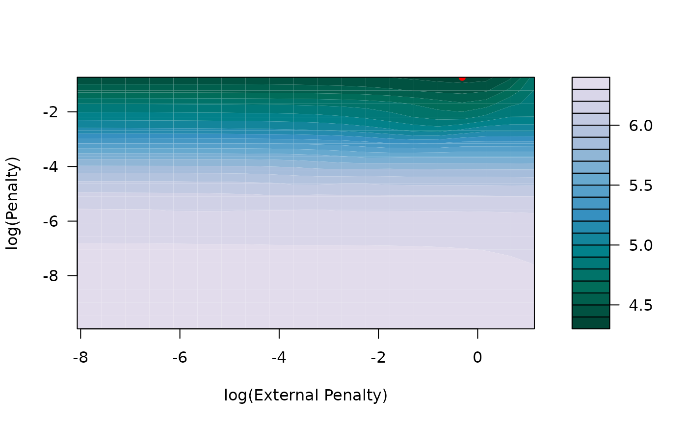

k-fold cross-validation for hierarchical regularized regression
Source:R/tune_xrnet.R
tune_xrnet.Rdk-fold cross-validation for hierarchical regularized
regression xrnet
Usage
tune_xrnet(
x,
y,
external = NULL,
unpen = NULL,
family = c("gaussian", "binomial"),
penalty_main = define_penalty(),
penalty_external = define_penalty(),
weights = NULL,
standardize = c(TRUE, TRUE),
intercept = c(TRUE, FALSE),
loss = c("deviance", "mse", "mae", "auc"),
nfolds = 5,
foldid = NULL,
parallel = FALSE,
control = list()
)Arguments
- x
predictor design matrix of dimension \(n x p\), matrix options include:
matrix
big.matrix
filebacked.big.matrix
sparse matrix (dgCMatrix)
- y
outcome vector of length \(n\)
- external
(optional) external data design matrix of dimension \(p x q\), matrix options include:
matrix
sparse matrix (dgCMatrix)
- unpen
(optional) unpenalized predictor design matrix, matrix options include:
matrix
- family
error distribution for outcome variable, options include:
"gaussian"
"binomial"
- penalty_main
specifies regularization object for x. See
define_penaltyfor more details.- penalty_external
specifies regularization object for external. See
define_penaltyfor more details. Seedefine_penaltyfor more details.- weights
optional vector of observation-specific weights. Default is 1 for all observations.
- standardize
indicates whether x and/or external should be standardized. Default is c(TRUE, TRUE).
- intercept
indicates whether an intercept term is included for x and/or external. Default is c(TRUE, FALSE).
- loss
loss function for cross-validation. Options include:
"deviance"
"mse" (Mean Squared Error)
"mae" (Mean Absolute Error)
"auc" (Area under the curve)
- nfolds
number of folds for cross-validation. Default is 5.
- foldid
(optional) vector that identifies user-specified fold for each observation. If NULL, folds are automatically generated.
- parallel
use
foreachfunction to fit folds in parallel if TRUE, must register cluster (doParallel) before using.- control
specifies xrnet control object. See
xrnet_controlfor more details.
Value
A list of class tune_xrnet with components
- cv_mean
mean cross-validated error for each penalty combination. Object returned is a vector if there is no external data (external = NULL) and matrix if there is external data.
- cv_sd
estimated standard deviation for cross-validated errors. Object returned is a vector if there is no external data (external = NULL) and matrix if there is external data.
- loss
loss function used to compute cross-validation error
- opt_loss
the value of the loss function for the optimal cross-validated error
- opt_penalty
first-level penalty value that achieves the optimal loss
- opt_penalty_ext
second-level penalty value that achieves the optimal loss (if external data is present)
- fitted_model
fitted xrnet object using all data, see
xrnetfor details of object
Details
k-fold cross-validation is used to determine the 'optimal'
combination of hyperparameter values, where optimal is based on the optimal
value obtained for the user-selected loss function across the k folds. To
efficiently traverse all possible combinations of the hyperparameter values,
'warm-starts' are used to traverse the penalty from largest to smallest
penalty value(s). Note that the penalty grid for the folds is generated
by fitting the model on the entire training data. Parallelization is enabled
through the foreach and doParallel R packages. To use
parallelization, parallel = TRUE, you must first create the cluster
makeCluster and then register the cluster registerDoParallel.
See the parallel, foreach, and/or doParallel R packages
for more details on how to setup parallelization.
Examples
## cross validation of hierarchical linear regression model
data(GaussianExample)
## 5-fold cross validation
cv_xrnet <- tune_xrnet(
x = x_linear,
y = y_linear,
external = ext_linear,
family = "gaussian",
control = xrnet_control(tolerance = 1e-6)
)
## contour plot of cross-validated error
plot(cv_xrnet)
